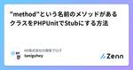

NE株式会社の開発ブログのフィード
https://zenn.dev/p/neinc_tech
NE株式会社のエンジニアを中心に更新していくPublicationです。 NEでは、「コマースに熱狂を。」をパーパスに掲げ、ECやその周辺領域の事業に取り組んでいます。 Homepage: https://ne-inc.jp/
フィード

断然"ずッぱや"がスタンダード！NEの社内ミートアップがもたらす価値と目指すカタチ。
NE株式会社の開発ブログのフィード
はじめまして、NE株式会社の 飯田あせ です。!この記事では、NE株式会社内部で定期開催しているずッぱや！？「社内エンジニアミートアップ文化」について紹介します！ はじめにNEでは、社内エンジニアが主催している「Engineer's Meet-up」というイベントがあります。これは、エンジニアロールのためのミートアップ、 ”知見共有会” でエンジニアたちの"良い"モチベーションを高めることを目的とし、毎月1回開催されているイベントです。「エンジニア's」 とありますが、実際には部署を問わず、誰でも参加者の発表を聴くことができます。発表者に関しては、主催するエン...
7時間前

社会人になって初めてカンファレンスに行った話 1
1
NE株式会社の開発ブログのフィード
前書き私は過去に学生スタッフとして2,3回カンファレンスには参加してきたのですが、カンファレンスで挙がる話題は業務に近いものが多く、当時学生だった自分は話題そのものに興味が持てませんでした。また、技術の話が出た時も自分の技術レベルからあまりにも離れた話題だったため理解できず授業を受けている気持ちになった苦い経験があり、社会人になった後もカンファレンスへの参加を遠ざけていました きっかけ最近業務のチームが変更され、カンファレンスなどに積極的に参加している方々が近くにいる影響で今まで遠ざけていたカンファレンスへの参加を決意しました。 参加前の不安参加を決めたはいいものの、...
1日前

ChatGPTの回答がきっかけでpreg_replaceの仕様を調べた話
NE株式会社の開発ブログのフィード
こんにちは〜！NE株式会社のはやしまき（@_mkmk884）です🦒みなさまコードを書く際にChatGPTやCopilotを使っていますでしょうか？私は文字列から特定の文字列を前方一致で削除した結果を取得する処理を書く際、ChatGPTに質問しました。preg_replaceを用いた2種類のコードがChatGPTから返ってきたので、違いを知るためにpreg_replaceの仕様を調べました！preg_replaceを用いて前方一致にさせるコードの書き方2種類とpreg_replaceの第四引数の仕様を、このブログに残します💪 やりたいこと文字列$completeItemCo...
2日前

ユーザーアンケートを実施して得られたもの 1
NE株式会社の開発ブログのフィード
私達のチームで開発しているプロダクトの使用感等に関するユーザーアンケートを初めて実施しました。個人的にはユーザーの生の声を聞くことによる様々な気づきがあったため、得られた結果と学びについて紹介します。 モチベーション弊社のNextEngineというサービスは多くのユーザーに利用され、日々さまざまなフィードバックが寄せられています。しかし、今回アンケートの対象となるサービスは比較的新しく、機能も最低限かつ利用しているユーザーも少ない小さなものなのでフィードバックを得る機会はなかなかありません。また、ユーザーのターゲット層にも少し特殊な要素があるため、現在提供している機能が最適な...
6日前

”method”という名前のメソッドがあるクラスをPHPUnitでStubにする方法
NE株式会社の開発ブログのフィード
NE株でPHPを書いている谷口(@taniguhey)です。テストコードを書いていて、VSCodeが妙な赤線を吐くな〜と思っていたら実はレアケースな仕様を踏んでいたのでその紹介です。タイトルの通りPHPUnitで"method"と言う名前のメソッドを持つクラスをスタブにしようとしたときに、通常のスタブの作り方では上手くいかなかったというお話を、サンプルコードを交えて書いていきます。 環境PHPUnit 9.6.15 物語以下のような、REST APIを表すインターフェースを設計しているとします。interface FugaInterface{ /** ...
12日前

郵便番号から都道府県は一意に特定できない罠をご存知か
NE株式会社の開発ブログのフィード
はじめに郵便番号とは、当たり前に都道府県・市区町村が特定できるものだと、そのための識別コードが郵便番号である、とすら思い込んでいました。そんな思い込みのもと、郵便番号から都道府県を割り出すコードを書き終わってから、「複数の都道府県にまたがる郵便番号」の存在に気付いた人がここにいたので、備忘録です。 やりたかったこと 郵便番号から都道府県を割り出したいユーザが47都道府県を、任意にグループ分けできる機能がある。注文の送り先都道府県がどのグループに属するかを判定したい。しかし住所はユーザ自由入力のため表記揺れが激しく、できれば見たくない。そこで郵便番号から都道府県...
15日前
社内の改善イベント NE KAIZEN JAMを楽しんできました！
NE株式会社の開発ブログのフィード
はじめにまさき。です。みなさんは、業務中に、リファクタリングしたいな、これがあれば開発が捗るかもな、などと思うことってありませんか？そういうのはたくさんあるんだけど、業務に追われてそのほとんどはアイディア止まり、手を動かすところまでいけないことが多いのかな、って思います。弊社でもそれを実現する時間がなかなか取れないのが現状ですが、今回は、そんな状況を打破すべくNE株式会社で行われたNE KAIZEN JAMという改善のためのイベントを紹介したいと思います！ NE KAIZEN JAM1日業務を止めて、普段から気になっていた改善できそうなところを一気にガッと改善しちゃお...
21日前
NE株式会社はPHPerKaigi 2024に協賛・登壇します。
NE株式会社の開発ブログのフィード
こんにちは、開発部でエンジニアをしているまね (@money166) ですNE(株)は 2024/03/07(木)-2024/03/09(土)中野セントラルパークカンファレンス&ニコニコ生放送で開催予定の「PHPerKaigi 2024」にシルバースポンサーとして協賛します。 PHPerKaigiとはPHPerKaigi（ペチパーカイギ）は、PHPer、つまり、現在PHPを使用している方、過去にPHPを使用していた方、これからPHPを使いたいと思っている方、そしてPHPが大好きな方たちが、技術的なノウハウとPHP愛を共有するためのイベントです。※公式サイトよりht...
1ヶ月前
RDSからAuroraに切り替えたら不明な5xxエラーがめちゃくちゃ増えた
NE株式会社の開発ブログのフィード
RDSからAuroraに切り替えた際に5xxエラーが増えてしまいました。原因と対処法について記載していきます。同じようなエラーを踏んだ人のお役に立てれば幸いです！ 事象RDS(5.7)からAurora(2.12.0.1)に切り替えました。その際にALBから5xxのレスポンスが増えてしまいました。 エラー内容ログを確認したところ「MySQL server has gone away」が発生していました。どうやらDBとの接続が切れてしまうらしい…。 調査/原因同様な事象がないか調べていると以下を発見しました。Aurora version 2.12.1Fi...
1ヶ月前
デザイナーがRails製トップページを改修した話
NE株式会社の開発ブログのフィード
2023年11月に、プロダクトのプラットフォーム トップページをリニューアルしました！（超カタカナ！）ほぼダミー＆ぼかしですいません。しかしレイアウトが大きく変わったことはおわかりいただけると思います！なぜこのレイアウトになったか、デザインで気をつけたことは置いておいて。テックブログの名の通りテック周り・・・Railsを初めて触って知ったこと、大きめのプルリク作って履歴がえらいことになったこと、その辺りのお話をしたいと思います。 Railsを触ることになった経緯デザイナーとしてのジョインでしたが、私はコーディングもしてきたので「いける？」「いけ・・・ます！！」と実装も担当にな...
2ヶ月前
PHPカンファレンス北海道2024を楽しんできました！
NE株式会社の開発ブログのフィード
こんにちは〜！NE株式会社のはやしまき（@_mkmk884）です🦒2024/01/12(金)と2024/01/13(土)にて開催されたPHPカンファレンス北海道2024の参加レポートを書きます！弊社からは3人が現地参加をしました↓https://twitter.com/asumikam/status/1745277865980215339 弊社の発表弊社からは私とあすみさん(@asumikam)の2人が発表をしました🙌 テスト嫌いな自分の苦手意識がなくなった話 / はやしまき動画 失敗例から学ぶSOLID原則 / asumikam動画https://asu...
2ヶ月前
PHPでgRPCサーバーとクライアントを作ってみる
NE株式会社の開発ブログのフィード
NE株でPHPを書いている谷口(@taniguhey)です。新しいアプリケーションの開発を始める際の設計でマイクロサービス間の通信にgRPCが候補に挙がることがあると思います。弊社では技術スタックのうちプログラミング言語はPHPが多くを占めていたので、実装はPHPのままマイクロサービスでgRPCを使えるかということを試してみる機会がありました。特に、PHPにおいてはgRPCの公式のドキュメントが更新されておらず日本語の情報も少ないため、PHPでgRPCサーバーは立てられないように捉えられるので、サーバー側についても書き残していこうと思います。なお、記載しているサンプルコードは重要...
2ヶ月前
チームで輪読会を開催しました【ユーザーストーリーマッピング】
NE株式会社の開発ブログのフィード
いよいよ年の瀬ですね〜！お仕事は納まりましたか？今日はあすみ(@asumikam)がお送りします！🙌私たちのチームではユーザーストーリーマッピングという本の輪読会をしました。この記事では決め方→実行→どうだったか、までを紹介していきたいと思います！ なぜ輪読会をやろうとなったのか輪読会は私が「やろう！」と提案しました。私たちは先月(11月半ば)から発足した新チームで、初めて一緒に仕事をする人もいました。チーム発足し、とりあえず目の前の課題を解決していく中で「プロダクトに向き合う上での"チーム"で共通認識を築きたい」と思ったのがきっかけです。また年明けから本格始動するよう...
3ヶ月前
2023年NEテックブログまとめ
NE株式会社の開発ブログのフィード
https://qiita.com/advent-calendar/2023/neメリークリスマス！！（まだクリスマス）NE Advent Calendar 2023の25日目担当のよへいです。社会人になると1年があっという間に過ぎていく感覚がありますが、濃密な時間を過ごせているからなんだろうと思っています。（個人の感想です）2023年6月にテックブログを開始して7ヶ月目となりました。2023年を振り返るには数日早いかもしれませんが、よい機会なのでNEテックブログについてふりかえってみたいと思います。 2023年12月25日現在総記事数：56記事（※本記事を除いて集計）...
3ヶ月前
Github Codespacesを使って1Dayというか半DayでWebエンジニアを体験してもらうインターンをやりました。
NE株式会社の開発ブログのフィード
はじめに初めまして！小田原にあるNE株式会社のエンジニアのtaroです!今回は、少し前に実施したエンジニア向け1dayインターンを紹介します。（技術的な話はあまりしません） インターンシップの目的今年（2023）できたばかりなNE株式会社という会社を認知してもらうこと。Webエンジニアとしての仕事を体験して興味を持ってもらうこと。 インターンシップの内容実施日時：10/13(金) 10:00~18:00参加人数：4名当日のタイムテーブルは以下のようになっていました。時間内容10:00~10:30アイスブレイク&自己紹介(イ...
3ヶ月前
一人での学習も継続できる！"私たちの"最高な勉強会
NE株式会社の開発ブログのフィード
https://qiita.com/advent-calendar/2023/neこんにちは！NE Advent Calendar 2023の22日目、ゾロ目の日担当のはやしまき（@_mkmk884）です🦒新卒三年目になり、今まで以上に成長したい！強くなりたい！と思い、学習を始めても自分一人では三日坊主で終わる人生でした。そんな時、誰かと一緒にやれば続くのかも…！と思い立ち、あすみさん(@asumikam)と定期的に勉強会を始めました。その結果、継続的に学習する習慣ができました。今日は、もともと継続が苦手な私が学習を継続できている機会になった勉強会について、工夫したことと個人...
3ヶ月前
その機能ちゃんと使ってもらえてますか？
NE株式会社の開発ブログのフィード
!NE Advent Calendar 2023の20日目の記事です。 はじめにまさき。です。突然ですが、私には過去に大して利益を得られてないツールにお金を払って悲しい想いをしたり、副業で時間をかけて作ったものが全然使われてなくてがったりした経験があります。それからは、同じような気持ちを持った人を減らしたいという思いが強くなりました。日々の業務でもここらへんは人一倍意識しているつもりです。最近、自分の所属するPJでもアウトプットよりもアウトカム(成果)を意識しよう！という動きが活発であり、作って終わりじゃなくて「使ってもらえていること」に以前よりも意識を配ることが多くな...
3ヶ月前
Hotwireをキャッチアップした
NE株式会社の開発ブログのフィード
こんにちは！この記事はNE Advent Calendar2023 13日目の記事です。https://qiita.com/advent-calendar/2023/ne はじめにHotwireとはRails7から標準になったSPAライクなフロントエンドWebアプリケーションを構築できる技術です。https://hotwired.dev/一部の機能ではありますが、導入してみてとても良いなと感じました。Hotwireの概要と、導入してみた所感について書こうと思います。 Hotwire概要Hotwireは前述したようにフロントエンドを構築するためのもので、Turbo・S...
3ヶ月前
価値のある単体テストを書こう
NE株式会社の開発ブログのフィード
https://qiita.com/advent-calendar/2023/neこんにちはー！NE Advent Calendar 2023の11日目、ゾロ目の日担当のはやしまき（@_mkmk884）です🦒22日目も書くのでぜひ読んでください😉みなさま、価値のある単体テストを書いておりますでしょうか？私はなんとなくでテストを書いていた過去があります。。先日、「単体テストの考え方/使い方」を読んで、価値のある単体テストを書かなきゃなと心から感じたため、今日はその本の紹介をしようと思います！ 「単体テストの考え方/使い方」の概要https://www.amazon.co....
4ヶ月前
[PHPUnit] 差分だけデータプロバイダのすゝめ
NE株式会社の開発ブログのフィード
!この記事はNE Advent Calendar 2023の9日目の記事です。季節はめっきり冬めき、街を歩けばクリスマスソングが聞こえ始めた今日この頃。NE株式会社AdventCalendar9日目は、さくらいが担当いたします。こちらは【ツールなど使わず手動で】【データプロバイダに】【少しずつ値を変えて大量のパターンをテストしたい】という方向けの記事です。手っ取り早く書き方だけ知りたい方はジャンプ。 はじめにみなさん、テスト書いてますか？テストを書くのは好きですか？私は最近テストのメリットを実感しはじめ、自らすすんで書くようになってきました。私がテストを書くようになっ...
4ヶ月前